Chapter 17 School of Design
After reading so much about software, I'm sure you're itching to create a bit of your own! Let's start by taking a look at how software is designed. If you're reading this, then you must be doing so via some kind of application, where that be a web browser like Chrome, document viewer like Preview, or even text editor like Notepad. Right this second, take a moment to look around whatever piece of software you're using. Is the interface beautiful, or is it a bit of an ugly duckling? How easy is it to use? Does it feel clunky, or is it slick and streamlined? The answers to these questions depend on how the software you're using is designed, which includes not only how it looks, but also your experience in using it. So, design includes both what color buttons should be as well as what buttons should be included and where they should be placed.
Design Principles
First, let's talk about a few design foundations. Ultimately, the goal of designers is to create products that are both beautiful to look at and easy to use. For basic design principles for doing just that (proposed by Robin Williams in the excellent book The Non-Designer's Design Book) can be abbreviated using the elegant acronym CRAP. While perhaps you're used to seeing this word in a different context, the CRAP we'll talk about in this section refers to Contrast, Repetition, Alignment, and Proximity. Each of these terms alone is pretty simple, but they come together to create great designs.
The idea of contrast is that elements that are very different should look very different. Contrast doesn't just refer to color, as elements can also vary in size, shape, and typeface, for example. If elements don't contrast with each other enough, then users might assume that they're related somehow, since they look the same. Here's a good example of contrast taken from Harvard's School of Engineering and Applied Sciences. On the left is the navigation menu, which has a fundamentally different purpose than the content on the right. Notice how the menu and the main body text contrast with each other, so it's clear to the user that there's a division between the two.
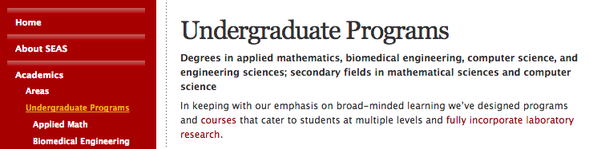
Here's another example. This time, we're using contrast to create a nice aesthetic effect rather than make a website easy to use. If we're going to make elements different, then we may as well make them really different. Then, we can create a bold, striking visual effect like this:
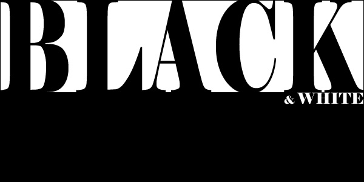
Next up is repetition. If we have a big website with lots of different pages, we can create a more organized, unified feel by repeating elements across the site. Repetition is also great for branding—if users see the same logo all over a website, then it will be more memorable and easily associated with the site. So, repetition can be used to create a cohesive design. Hipmunk is a travel website that features an adorable chipmunk in their logo:
The chipmunk can be found throughout the steps of the flight-finding process, and his presence ties these different steps together. The same idea can be found on Google's search pages, which have a navigation bar that looks like this:
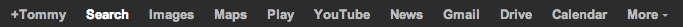
Even though Google has a variety of different search products ranging from images to shopping, the same navigation bar can be found on each page. So, the repetition of elements, whether those be adorable characters or navigation bars, can help create a unifying experience across different pages.
A is for alignment, which refers to the placement of elements on a page. By aligning elements, we can create a cleaner, sharper-looking layout than we could by simply placing elements randomly on the page. Instead, elements' positions should create a visual hierarchy on the page, which results in a more organized design. Here's an example from Facebook. Notice how the thumbnails and the text are all left-aligned, and the space to create a new comment uses the same alignment, since it's related.
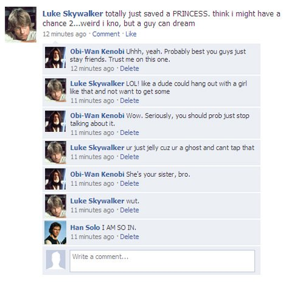
And here's another example, this time from the New York Times homepage. Though the New York Times has a ton of content on the page, by aligning headlines and body text, the designers can still create an organized feel.
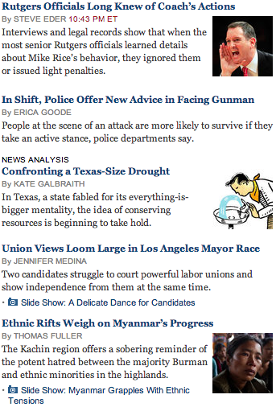
Finally, we have proximity. The idea behind proximity is similar to the idea behind contrast: just as similar elements should look similar, and similar elements should be placed in similar locations on the page. If elements are grouped visually, then we'll naturally perceive them as a single unit. For example, take a look at the squares below. On the left, the squares are placed in random locations, so we focus on them as individual shapes, while on the right, the proximity of the squares causes us to see them as a group.
The same principle applies to content organization. Here's an example from Mashable, where we can see that two blocks of content have been created via proximity.
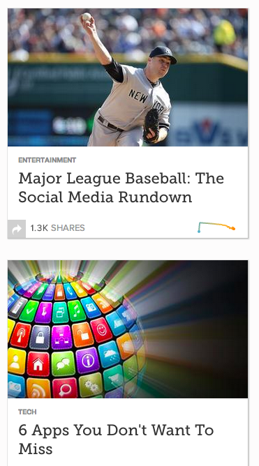
That was a lot of CRAP, so let's recap. Contrast describes differences in elements, repetition describes elements common to multiple pages, alignment describes the positioning of elements, and proximity describes visual groupings. With these four basic principles, we can create some great design!
Typography
If words didn't exist, then all websites would probably just be repositories of cat pictures. Sadly, though, there are lots of words on the Internet, so an important part of design is making those words look good, whatever they may say. Typography describes the appearance of text on a page, which includes the style, size, and placement of text. As you've probably noticed, your operating system comes pre-loaded with a good number of different fonts, or typefaces. Broadly speaking, we can break fonts down into a few different categories:
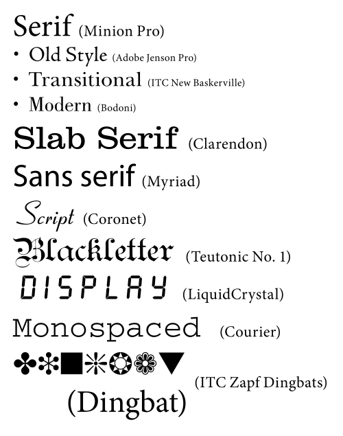
Notice how serif fonts and sans-serif fonts look a bit different; while serif fonts feel pointy, sans-serif fonts are smooth. A serif refers to a small, decorative flourish (often just a tiny line) on the edge of a character, so naturally, a sans-serif font is one without serifs. Here's a comparison between the two, with the serifs highlighted.
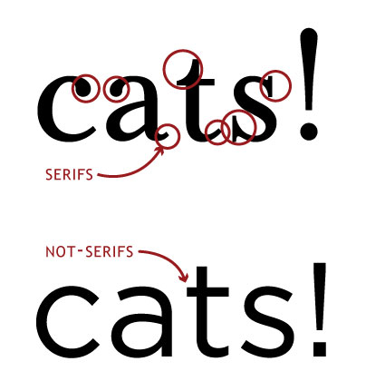
Monospace fonts, on the other hand, make sure that each letter is the same width, which can be helpful in getting text to line up without any effort. Other types, like script and symbols, are a bit more self-explanatory. We can also characterize a typeface based on the various heights of its characters. Here are a few height lines we can draw across a font:
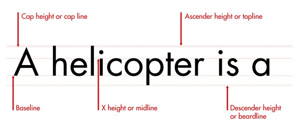
Let's go through a few of these. The characters sit on the baseline, which is just like the lines on a piece of lined paper. Some letters, like "l" and "t", are a bit taller than others, and the ascender line defines how tall these letters can be. Similarly, letters like "g" and "p" drop down a bit below the baseline, and the descender line describes how low they can go. Finally, the midline is the height of your run-of-the mill lowercase letter, and the cap height is the height of a capital letter.
Once we have a font, we can change a few things related to spacing. First, leading describes the amount of vertical space between lines of text. A double-spaced essay, for example, has more leading than a single-spaced document. Readable text strikes a balance between smooshing lines of text together and spacing text so far apart that lines no longer look related. Here's an example of the effects leading can have on text:
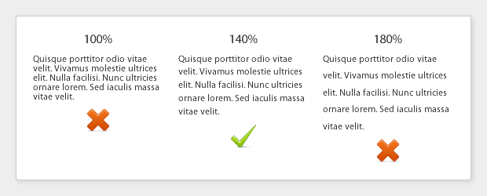
While leading is the vertical space between lines of text, tracking is the horizontal space between characters on the same line. Here are a few different examples of the same text with different tracking values:
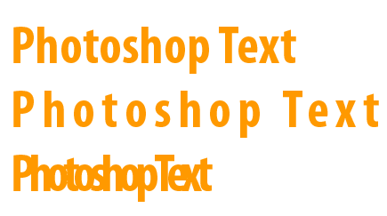
Related to tracking is something called kerning, which is the process of adjusting the tracking between certain characters to make some pieces of text look much cleaner. The capital "T" is an interesting character; the top of the letter is a bit like an awning, so there's some space for other stuff, perhaps a lowercase letter, underneath. So, simply placing characters right next to each other might not produce the most elegant results. Here's an image to illustrate. On the top, we have kerning between the "T" and the "o" in "tomorrow" as well as between the "A" and "V", while the bottom doesn't use kerning at all. When these two pieces of text are placed next to each other, we can see that kerning actually makes a pretty big difference!
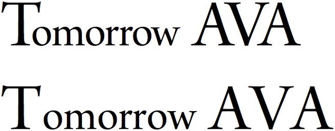
Ten Usability Heuristics
Now that we've talked a bit about how to make something look good, let's take a look at a few ways to make something easy to use. Even if you design the nicest-looking website the world has ever seen, if people can't find the "Sign Up" button or figure out how to use your product, then all your CRAP will go to waste. I could make these stupid puns all day, so let's talk about something else. Back in the 90s, a smart guy named Jakob Nielsen proposed ten usability heuristics (or rules of thumb) that any user interface, which is simply the front-facing controls of a website, or any software application, really, should follow.
#1: Visibility of system status. Make sure your users know what's going on at all times. If your site is doing something (perhaps behind the scenes), make sure you make that clear to users, else they might get confused and go somewhere else. Progress bars are a great way to do this, since users know not only that something is happening, but also how much longer it might take.
#2: Match between system and real world. We spend a lot of time living in the real world, so we're pretty used to it by now. There's no reason that using a computer should feel like a whole new world to the user. Instead, avoid jargon and images that are specific to your site, since users might not know what they mean. Apple is notorious for creating interfaces that are modeled after real world things. Here's a screenshot of the iBooks app, which looks just like a real-world bookshelf.
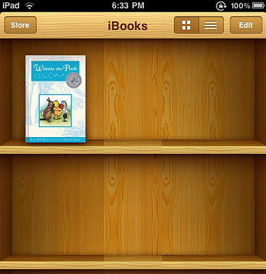
#3: User control and freedom. Don't make it difficult for users to do what they want. From any page, for example, it should be easy for the user to get to the most important parts of the website. This could also mean putting up "emergency exit" signs throughout your site, so users are always free to get back to where they were before. Gmail does this through it's amazing "undo send" feature, which gives users the control to prevent an email from being sent even after they hit send.
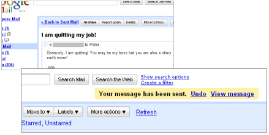
#4: Consistency and standards. Be consistent with your use of images and language throughout the site. Users should never have to wonder if a word used on one page means the same thing as a different word on another page. Similarly, don't invent a new standard if you don't have to. If you're making a new email app, then calling the email inbox something other than "inbox" is just going to confuse people. Here's a screenshot from Microsoft Word and Microsoft PowerPoint; notice that the toolbars are consistent!
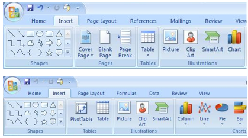
#5: Error prevention. Emergency exit signs are great, but ideally, users never have to use them. After designing a website, you know exactly how to use it, and you know all of the ins and outs. However, someone coming to your site for the first time certainly doesn't, so you should make it as difficult as possible for them to mess something up! Here's a screenshot from Wordpress, a blogging platform. Notice how the "save" action gets a big button, while the "cancel" action is only a bit of text. Because the "save" button is so much bigger, it's much less likely that the user will accidentally delete their post!
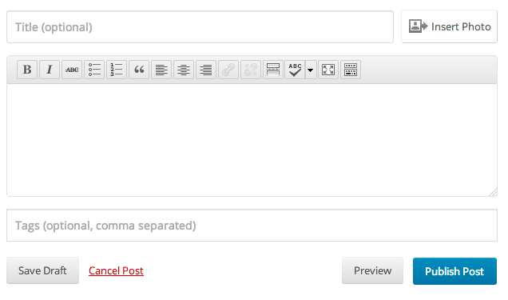
#6: Recognition rather than recall. Remembering how to use your website shouldn't require any extra brain cells. Rather than expecting users to remember which submenu a certain option is found in, make it easy for your users to recognize how to perform actions. Here's a great example from Keynote. Rather than making me remember what each of my many fonts looks like, the font menu uses each font to display its name. Now, it's much easier for me to find what I'm looking for!
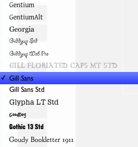
#7: Flexibility and efficiency of use. You and your friend might use a website totally differently. For example, I love using keyboard shortcuts, but I have a friend who prefers clicking buttons, so he doesn't have to memorize a big list of keys. In order to make both of us happy, your site should be flexible. Your interfaces should cater to new and experienced users alike, so that everyone can make use of your site efficiently. Here's a list of just some of the keyboard shortcuts found in Gmail, which I think allows me to use the site much more efficiently:
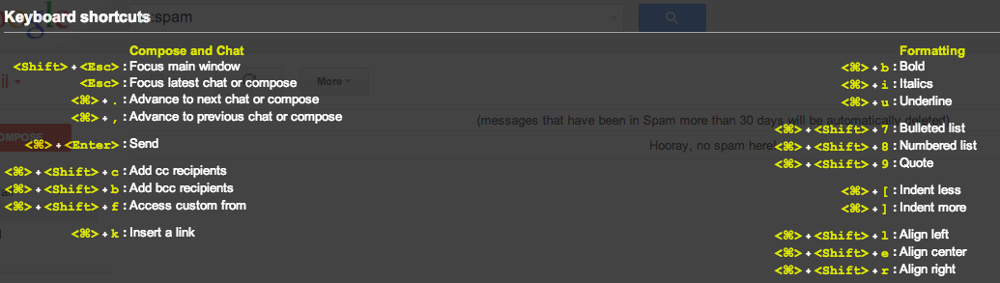
#8: Aesthetic and minimalist design. After making a cool website, there's a natural tendency to want to show off all the amazing features you built. However, that doesn't mean that you should cram a button or checkbox for every single possible option into a single page. Instead, make sure any page only contains information that is absolutely necessary, to avoid overwhelming the user. Here's what can happen if you try to fit too many things into a small space:
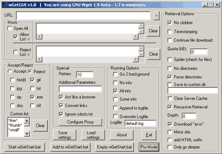
#9: Help users recognize, diagnose, and recover from errors. Despite your best efforts, there's a good chance that users will mess something up while using your site. Rather than denying the inevitable, make it easy for users to figure out what they did wrong and how they can fix it. Here's an example from Mint's registration page. Notice how easy it is to see which parts of the form were filled out incorrectly, and the page also includes helpful messages that explain how to fix the problems!
{kind=link}
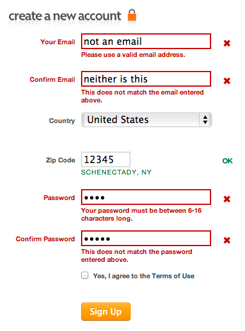
#10: Help and documentation. In a perfect world, we could create user interfaces that were self-explanatory to everyone that saw them, but sadly, this isn't the case in the real world. Many users, particularly those who may be unfamiliar with your site, might simply want easy-to-follow instructions that teach them how to use your product. So, having something that explains how to use your site, whether that simply be a picture, screencast, or textual instructions, can go a long way in making sure that your users are able to use your creation.
All right, now that you have some design foundations, let's take a look at what actually goes into creating a website!